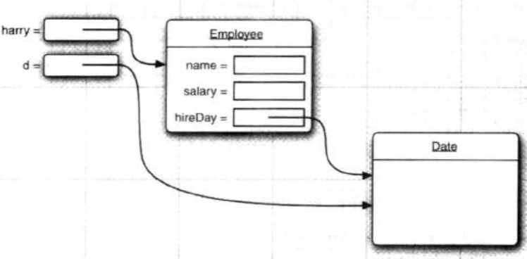

前言
本篇文章主要总结了写JAVA代码需要了解的基础知识，包括自定义类、构造方法、修饰符、源文件声明规则等。
1.用户自定义类
1. 自定义类最简单的格式
1 | class ClassName { |
2.如何写JAVA程序
- 首先写好自定义类，然后在主类中调用，下面是一个例子，包含EmployeeTest类和Employee类（自定义类）
1 | package test; |
- 需要注意的是这段代码
1 | public Date getHireDay() { |
这段代码不应该这样些，因为这样返回了一个可变对象，会破坏封装性
如果用
1 | Date d = harry.getHireDay(); |
则d和harry引用了同一个Date对象， 这样对d调用set方法就可以更改harry这个雇员的私有状态，如下图：

- 虽然getName方法也返回的是一个String对象，但是String变量是只读的。
所以为了封装性，不能返回可变对象，如果要返回的话，需要用clone
1 | public Date getHireDay() { |
基于类的访问权限
如果要写一个equals方法：
1 | //equals比内容， ==比地址（是否是同一个对象） |
调用 if (harry.equals(boss))
这个是成立的，原因是boss是Employee类，在JAVA中，一个Employee类中的方法可以访问Employee类的任何一个对象的私有域。
要实现私有方法把public改为private即可
2.构造方法（构造器）
1. 作用：
给对象的数据初始化（要使用对象，必须构造对象，指定初始状态）
随着new关键字来调用，如：new Date()
2. 特点：
- 构造器的名字与类名完全相同
- 无返回类型
- 构造器总是伴着new一起使用
- 每个类可以有一个以上的构造器，每个构造器可以有0、1或多个参数
1 | //举例，下面有完整例子与注释 |
- 构造方法不能用对象调用，在创建对象的时候系统自动调用构造方法
3.对象和对象引用变量
对象和对象引用变量的区别
Date deadline;
- 这个语句定义了一个对象变量（可以用指针来理解），但是这不是一个对象，不能使用任何Date方法
- 要使用这个变量必须先初始化变量 deadline
deadline = new Date();
new相当于调用了构造器 - 一个对象引用变量不包含一个对象，只是『引用』一个对象，存储这个对象的地址值
- 在JAVA中，任何对象变量的值都是对存储在另一个地方的一个对象的引用！！
Date deadline = new Date();
分为两个部分：
右边是用new构造了一个Date类的对象
左边是用对象引用变量deadline来存储右边对象的地址值
4.局部代码块、构造代码块、静态代码块
1. 局部代码块
在方法中，可以控制变量的生命周期，提高内存利用率
1 | { |
如这样x是没有值的
2. 构造代码块（初始化块）
- 构造代码块在类中方法外，多个构造方法（有参构造和无参构造）中相同的代码存放到一起，
- 每次调用构造都执行，并在构造方法前执行
3.静态代码块static
- 类中方法外
- Static修饰，给类初始化，在加载类的时候就执行
- 只执行一次
- 优先于主方法执行
- 一般用于驱动，加载一次即可
5.源文件声明规则
- 一个源文件只能有一个public类，可以有多个非public类
- 如果一个类定义在某个包中，package语句应放在源文件首行
- 如果源文件包含import语句，应该放在package语句和类定义之间
Java包和Import语句
- 包主要用来给类和接口进行分类
- Java中如果给一个完整的限定名，包名、类名，则Java编译器很容易定位到类或者源代码，Import语句用来提供一个路径让编译器找到某个类
import java.io.*
这行代码就会命令编译器载入java_installation/java/io路径下面的所有类
6.Package
- 包相当于文件夹，对class进行分类存放
- 多级包用.分隔
- package语句必须是第一条代码
- package语句一个java文件中只能有一个
- 不同包下类之间的访问：
类名前要加完整的包名（被访问的类要是public的 ）
7.Import
- 导入包语句要放在package语句下面
- 导入包后调用包内的类就不用加包名了
- 最好导入具体类，不用*，效率低。
8.修饰符
1. 权限修饰符：
- private: 本类
- 默认： 本类、同一个包的类
- protected:本类、同一个包的类、不同包下的子类
- public： 本类、同一个包的类、不同包下的子类、不同包下的无关类
2. 状态修饰符
static
final
3. 抽象修饰符
abstract
9.Static修饰符
1.特点：
- static是一个修饰符，用于修饰成员。（成员变量，成员函数）static修饰的成员变量 称之为静态变量或类变量。
- static修饰的成员被所有的对象共享。
- static优先于对象存在，因为static的成员随着类的加载就已经存在。
- static修饰的成员多了一种调用方式，可以直接被类名所调用，（类名.静态成员）。
- static修饰的数据是共享数据，对象中的存储的是特有的数据。
2.成员变量和静态变量的区别：
- 生命周期的不同：
成员变量随着对象的创建而存在随着对象的回收而释放。
静态变量随着类的加载而存在随着类的消失而消失。 - 调用方式不同：
成员变量只能被对象调用。
静态变量可以被对象调用，也可以用类名调用。（推荐用类名调用） - 别名不同：
成员变量也称为实例变量。
静态变量称为类变量。 - 数据存储位置不同：
成员变量数据存储在堆内存的对象中，所以也叫对象的特有数据。
静态变量数据存储在方法区（共享数据区）的静态区，所以也叫对象的共享数据。
3.静态使用时需要注意的事项：
- 静态方法只能访问静态成员。（非静态既可以访问静态，又可以访问非静态）
- 静态方法中不可以使用this或者super关键字。
- 主函数是静态的
10.Final
1.final修饰方法
方法就不会被子类重写
2.final修饰类
类就不会被继承
3.final 修饰基本数据类型
值不能改变
4.修饰引用数据类型
地址值不能改变，但是对象的属性可以改变
1 | final person p = new person (“李”，10); |
11.Abstract修饰符
- abstract和static不能共同修饰
因为static修饰的方法可以用 类名.方法调用，但是抽象方法不能调用 - abstract不能和final 共存
因为abstract修饰方法要让子类强制重写，但是final不让子类重写 - abstract不能和private共存
因为private不让子类访问 - 下篇会详细介绍抽象类